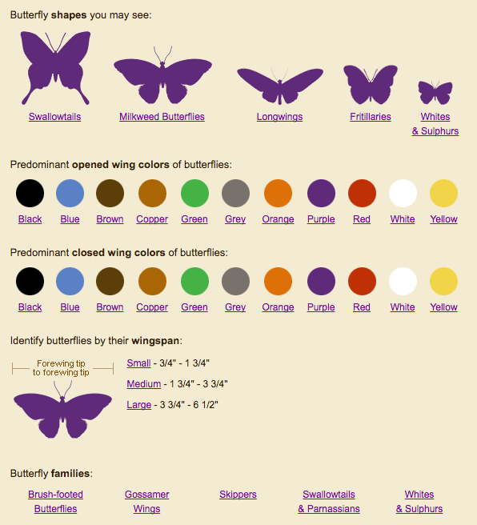

Such a lovely topic, nature, I expected to have loads of ideas once I started on February... But that didn't happen. After spending a bit too much time on January's visual, I had set myself a goal that I wanted to try and finish February within 20 hours, just to force myself to deliver something within a reasonable number of hours. And having a "dataviz" block wasn't helping me stay within that time limit 😞
However, at some point I thought about what defines nature for me, which was evolution and the randomness of mutations that in turn can lead to "better adaptations" to the environment. Which in turn reminded me of generative art and the semi-randomness which often guides those pieces of art. I've always loved generative art and thus suddenly February seemed like the perfect month to give it a try.
Now I only needed a subject to guide the randomness. The first thing I was drawn to were flowers, but damn, I could not find a single dataset about flowers that contained information such as the main color, average number of petals, blooming period, things like that. It was all images for image processing training or taxonomy lists (e.g. what group, family, etc. does the flower belong to). I therefore turned my attention to butterflies, for which I also have a fascination (don't ask my boyfriend how much time he's had to wait for me on vacations while I was trying to perfectly capture a butterfly, 😅 ). But.... same problem, only taxonomy lists, no nice dataset with main wing color, size, etc.
The best (start of a) dataset that I could find, I kid you not, was eventually found on Gardens with Wing. It at least had some pages that divided butterflies into main colors, wing shape, size and species. So I manually turned the results of this pages filters into a dataset with 86 butterflies (found here).
The main color of a butterlfy I could use to color whatever path the butterfly was going to have on my screen, the size of the butterfly could guide the thickness of the line/point, whatever I was going to make of it, and the species maybe could guide something else (the type of the path?). That wasn't a lot of information to use, but hopefully it would be enough 😁
{kind=link}